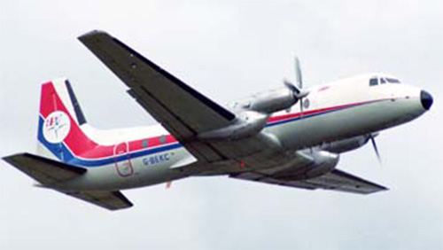

HS-748

- Разработчик: Hawker Siddeley
- Страна: Великобритания
- Первый полет: 1960
- Тип: Многоцелевой транспортный самолет
HS-748 — это британский ближнемагистральный турбовинтовой самолёт, разработанный компанией Avro в конце 1950-х годов. Он был создан для замены стареющего парка Douglas DC-3. Всего было произведено 380 самолётов HS-748.
Самолёт имеет укороченный взлёт и посадку (STOL) и оснащён двумя турбовинтовыми двигателями Rolls-Royce Dart RDa.7 Mk 536-2 мощностью 1700 кВт каждый.
Длина HS-748 составляет 20,42 метра, размах крыла — 31,23 метра, высота — 7,57 метра, площадь крыла — 77 квадратных метров. Максимальная взлётная масса составляет 21 092 килограмма, а полезная нагрузка — 5136 килограммов. Крейсерская скорость равна 452 километрам в час, дальность полёта — 1715 километров, практический потолок — 7620 метров. Экипаж самолёта состоит из трёх человек, а пассажировместимость варьируется от 40 до 58 человек.
| Летно технические характеристики | |
|---|---|
| Модификация | HS.748M |
| Размах крыла максимальный, м | 31.23 |
| Длина, м | 20.42 |
| Высота, м | 7.57 |
| Площадь крыла, м2 | 77.00 |
| Масса, кг | |
| - пустого самолета | 11671 |
| - нормальная взлетная | 21092 |
| Тип двигателя | 2 ТВД Rolls-Royce Dart RDa.7 Mk 536-2 |
| Мощность, э.л.с | 2 х 2280 |
| Крейсерская скорость, км/ч | 452 |
| Практическая дальность, км | 2630 |
| Практический потолок, м | 7620 |
| Экипаж, чел | 3 |
| Полезная нагрузка: | 58 солдат или 48 парашютистов или 24 носилок и 9 сопровождающих или 7883 кг груза |